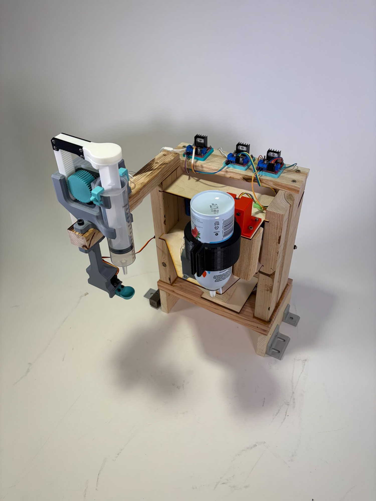
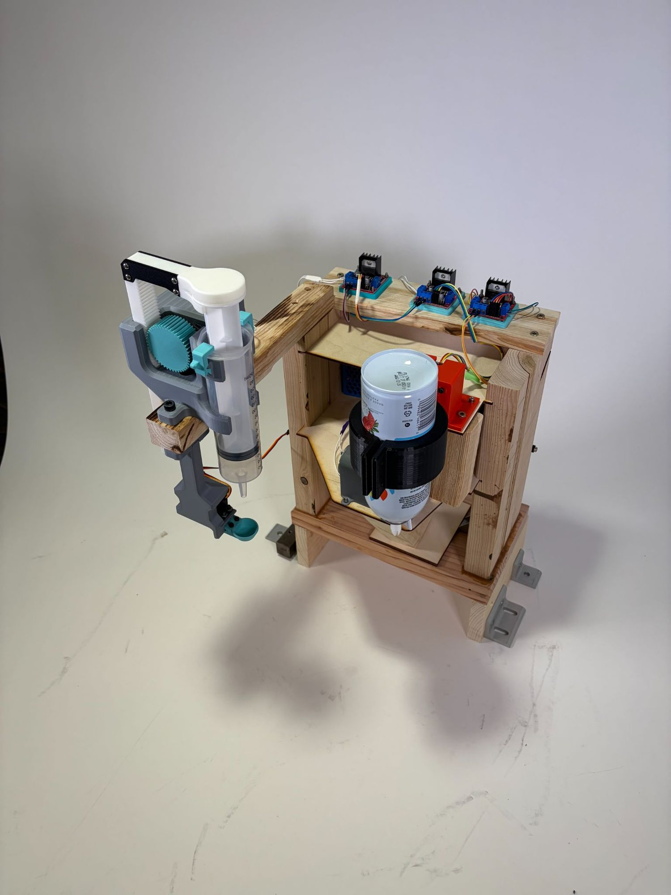
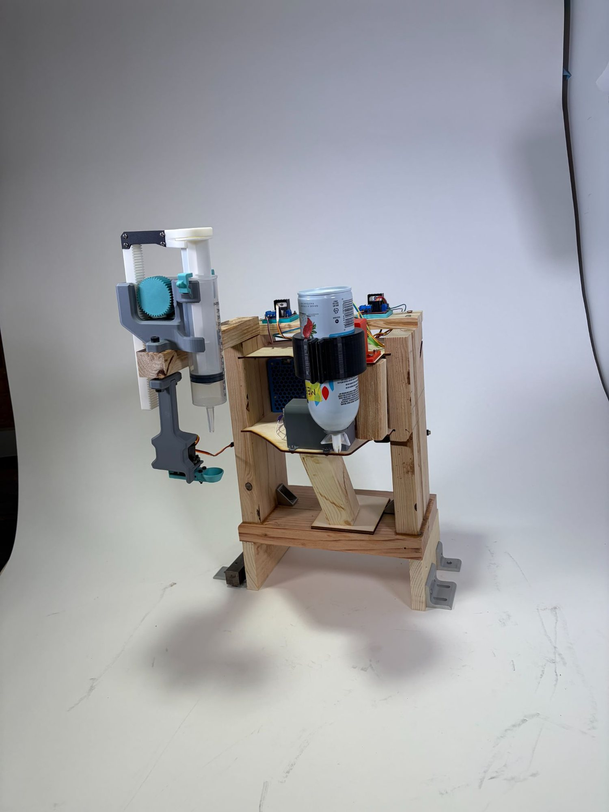
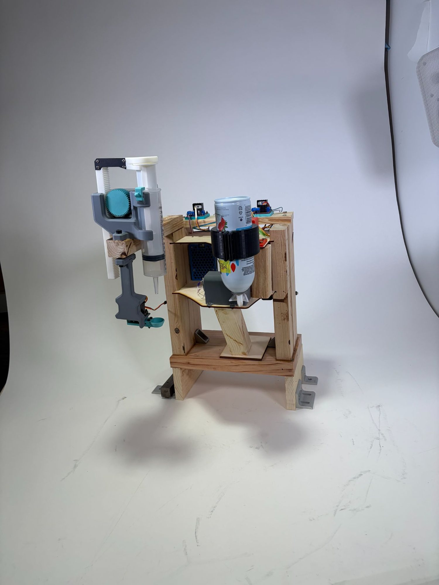
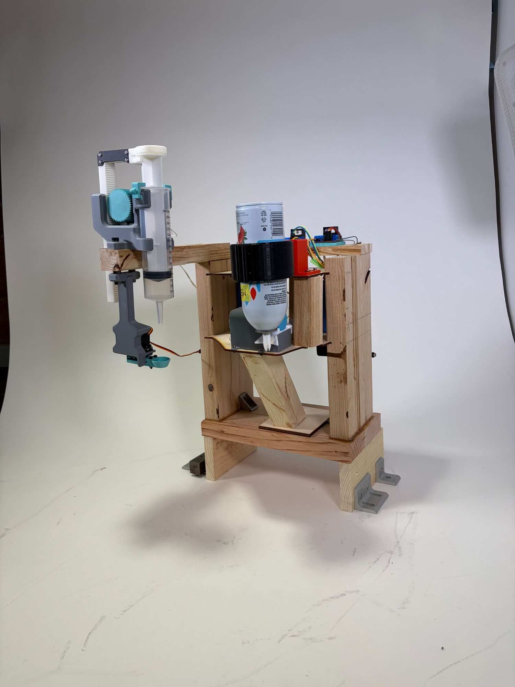
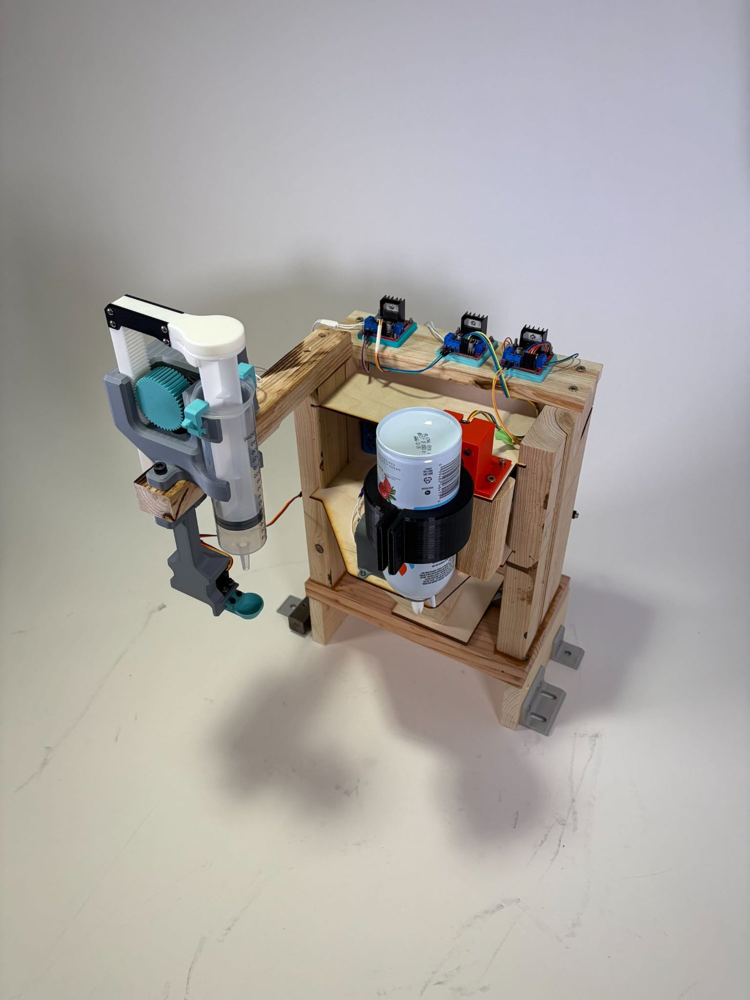

Project overview
For this one-month robotics project, our team designed and built a fully automated waffle-making system composed of multiple coordinated stations, each handling a distinct stage of the production process. At the core of the system was an iRobot Create 3, which acted as a mobile platform responsible for transporting the plate between stations. The workflow began at the waffle-making station, which cooked and dropped the finished waffle directly onto the plate carried by the robot. The plate was then driven to subsequent stations — a whipped cream and maple syrup dispensing station, and a final station equipped with a mechanism for delivering pre-cut strawberries — each activated selectively depending on the customer's order. Orders were placed by customers through a custom-designed web interface built on Airtable, which communicated in real time with the Create 3, allowing the robot to determine which stations to stop at and which to bypass. This project challenged us to integrate hardware, software, and user-facing design into a single cohesive system, combining robotics, sensor-based automation, and web-connected order management to deliver a seamless and personalized food-preparation experience.
Whipped cream & maple syrup station — my contribution
The whipped cream and maple syrup station was the component I was personally responsible for designing, building, and programming throughout this project. Structurally, the station consists of a wooden frame housing two independent dispensing mechanisms: a can-based dispenser for whipped cream, actuated by a stepper motor that rotates and shakes the can, and a DC motor that pushes a rack and pinion to dispense the cream; and a syringe-based dispenser for maple syrup, also driven by a stepper motor that pushes the plunger to control the flow. A stepper motor was incorporated as an anti-drip mechanism on the maple syrup syringe, applying a slight reverse rotation after each dispensing cycle to retract the plunger and prevent unwanted dripping onto the plate. The station is controlled by two Raspberry Pis, which continuously poll the Airtable database via API calls to monitor the order status. Once the Airtable entry for a given order is updated to indicate that the Create 3 has arrived and the station should activate, the Raspberry Pi triggers the appropriate stepper motors depending on whether the customer ordered whipped cream, maple syrup, or both. This approach allowed the station to operate autonomously with the rest of the system, relying entirely on the shared Airtable database as the communication backbone between the robot and each station.
System integration
All stations were unified through a shared Airtable database, which served as the central communication layer of the system. When a customer placed an order through our custom Airtable web interface, the Create 3 would retrieve the order details via API and begin navigating the production line by following a colored line on the ground, detected through an onboard color sensor. At each station, the robot would stop only if the corresponding item had been ordered, triggering that station to poll Airtable and activate autonomously. This architecture allowed every component of the system to operate independently while remaining fully synchronized through a single shared data source.
View Python code — maple syrup station
import RPi.GPIO as GPIO
import time
import airtable_module as airtable
# ── Configurable parameters ──────────────────────────────────────────────────
STEP_DOWN_TIME = 6
STEP_PAUSE_TIME = 0.5
STEP_UP_TIME = 0.25
STEP_DOWN_PWM = 25
STEP_UP_PWM = 25
# Servo positions
SERVO_BLOCKED = 150
SERVO_OPEN = 45
# ─────────────────────────────────────────────────────────────────────────────
# Pin setup (motor)
ena = 22
in1 = 24
in2 = 26
# Servo pin
servo_pin = 31 # GPIO12 (your working pin)
GPIO.setmode(GPIO.BOARD)
GPIO.setup(ena, GPIO.OUT)
GPIO.setup(in1, GPIO.OUT)
GPIO.setup(in2, GPIO.OUT)
GPIO.setup(servo_pin, GPIO.OUT)
GPIO.output(ena, GPIO.LOW)
GPIO.output(in1, GPIO.LOW)
GPIO.output(in2, GPIO.LOW)
# Motor PWM
motor1 = GPIO.PWM(ena, 50)
motor1.start(0)
# Servo PWM
servo = GPIO.PWM(servo_pin, 50)
servo.start(0)
# ── MOTOR FUNCTIONS ─────────────────────────────────────────────────────────
def go_forward(pwm, duration):
GPIO.output(in1, GPIO.HIGH)
GPIO.output(in2, GPIO.LOW)
motor1.ChangeDutyCycle(pwm)
time.sleep(duration)
def go_backward(pwm, duration):
GPIO.output(in1, GPIO.LOW)
GPIO.output(in2, GPIO.HIGH)
motor1.ChangeDutyCycle(pwm)
time.sleep(duration)
def stop(duration=0):
motor1.ChangeDutyCycle(0)
GPIO.output(in1, GPIO.LOW)
GPIO.output(in2, GPIO.LOW)
if duration > 0:
time.sleep(duration)
# ── YOUR WORKING SERVO CODE (UNCHANGED LOGIC) ───────────────────────────────
def hold_servo(angle):
duty = 3 + (angle / 180.0) * 9
servo.ChangeDutyCycle(duty)
def move_servo_slow(start, end, step=1, delay=0.008):
if start < end:
rng = range(start, end + 1, step)
else:
rng = range(start, end - 1, -step)
for angle in rng:
hold_servo(angle)
time.sleep(delay)
# ── CLEAN SERVO ACTIONS FOR SYSTEM ──────────────────────────────────────────
def open_servo():
print("Opening servo (allow syrup)...")
move_servo_slow(SERVO_BLOCKED, SERVO_OPEN)
hold_servo(SERVO_OPEN) # IMPORTANT: lock position
def close_servo():
print("Closing servo (block syrup)...")
move_servo_slow(SERVO_OPEN, SERVO_BLOCKED)
hold_servo(SERVO_BLOCKED) # IMPORTANT: lock position
# ── MAIN LOOP ────────────────────────────────────────────────────────────────
try:
print("Initializing servo to BLOCKED position...")
move_servo_slow(SERVO_OPEN, SERVO_BLOCKED)
hold_servo(SERVO_BLOCKED)
while True:
print("Waiting for Airtable: 0s")
elapsed = 0
while True:
status = airtable.get_status("maple syrup")
if status == "ready":
break
time.sleep(1)
elapsed += 1
if elapsed % 10 == 0:
print(f"Waiting for Airtable: {elapsed}s")
airtable.update_status("maple syrup", "executing")
# ── OPEN SERVO ─────────────────────────────────────
open_servo()
# ── DISPENSE ───────────────────────────────────────
print("Stepping down...")
go_forward(STEP_DOWN_PWM, STEP_DOWN_TIME)
stop(STEP_PAUSE_TIME)
print("Stepping up...")
go_backward(STEP_UP_PWM, STEP_UP_TIME)
stop()
# ── CLOSE SERVO ─────────────────────────────────────
close_servo()
print("Done.")
time.sleep(5)
airtable.update_status("maple syrup", "success")
print("Cycle complete, restarting...\n")
except KeyboardInterrupt:
print("\nExiting Program")
finally:
motor1.stop()
servo.stop()
GPIO.cleanup()View Python code — whipped cream station
import RPi.GPIO as GPIO
import time
import airtable_module as airtable
STATION = "whipped cream"
GPIO.setmode(GPIO.BCM)
GPIO.setwarnings(False)
# ---------------- SHAKE (Stepper) ----------------
OUT1 = 18
OUT2 = 17
OUT3 = 27
OUT4 = 22
stepper_pins = [OUT1, OUT2, OUT3, OUT4]
for pin in stepper_pins:
GPIO.setup(pin, GPIO.OUT)
GPIO.output(pin, 0)
step_delay = 0.018
sequence = [
(1, 0, 1, 0),
(0, 1, 1, 0),
(0, 1, 0, 1),
(1, 0, 0, 1)
]
def set_step(step):
for pin, value in zip(stepper_pins, step):
GPIO.output(pin, value)
def step_cw(steps):
for _ in range(steps):
for step in sequence:
set_step(step)
time.sleep(step_delay)
def step_ccw(steps):
for _ in range(steps):
for step in reversed(sequence):
set_step(step)
time.sleep(step_delay)
# ---------------- MOTOR ----------------
ena = 25
in1 = 8
in2 = 7
GPIO.setup(ena, GPIO.OUT)
GPIO.setup(in1, GPIO.OUT)
GPIO.setup(in2, GPIO.OUT)
GPIO.output(ena, GPIO.LOW)
GPIO.output(in1, GPIO.LOW)
GPIO.output(in2, GPIO.LOW)
motor1 = GPIO.PWM(ena, 50)
motor1.start(0)
def run_whipped_cream_station():
# -------- SHAKE FIRST --------
step_cw(7)
time.sleep(0.01)
step_ccw(14)
time.sleep(0.01)
step_cw(14)
time.sleep(0.01)
step_ccw(7)
time.sleep(0.01)
step_cw(7)
time.sleep(0.01)
step_ccw(14)
time.sleep(0.01)
step_cw(14)
time.sleep(0.01)
step_ccw(7)
time.sleep(0.01)
step_cw(7)
time.sleep(0.01)
step_ccw(14)
time.sleep(0.01)
step_cw(14)
time.sleep(0.01)
step_ccw(7)
time.sleep(0.01)
# turn off stepper after shaking
for pin in stepper_pins:
GPIO.output(pin, 0)
time.sleep(1)
# -------- THEN MOTOR --------
# Backward
GPIO.output(in1, GPIO.LOW)
GPIO.output(in2, GPIO.HIGH)
motor1.ChangeDutyCycle(50)
time.sleep(0.6)
# Pause
motor1.ChangeDutyCycle(0)
GPIO.output(in1, GPIO.LOW)
GPIO.output(in2, GPIO.LOW)
time.sleep(0.5)
# Forward
GPIO.output(in1, GPIO.HIGH)
GPIO.output(in2, GPIO.LOW)
motor1.ChangeDutyCycle(75)
time.sleep(0.6)
# Pause
motor1.ChangeDutyCycle(0)
GPIO.output(in1, GPIO.LOW)
GPIO.output(in2, GPIO.LOW)
time.sleep(1)
try:
while True:
# Wait for Airtable with elapsed time printed every 10 seconds
print("Waiting for Airtable: 0s")
elapsed = 0
while True:
status = airtable.get_status(STATION)
if status == "ready":
break
time.sleep(1)
elapsed += 1
if elapsed % 10 == 0:
print(f"Waiting for Airtable: {elapsed}s")
airtable.update_status(STATION, "executing")
print("Running whipped cream station...")
run_whipped_cream_station()
airtable.update_status(STATION, "success")
print("Cycle complete, restarting...\n")
except KeyboardInterrupt:
print("Stopped")
airtable.update_status(STATION, "failure")
except Exception as e:
print(f"Error: {e}")
airtable.update_status(STATION, "failure")
finally:
motor1.stop()
GPIO.cleanup()Reflection
This project was a valuable learning experience that pushed me to work with technologies I had little prior experience with. The most significant skill I developed was working with APIs and real-time data — building a system where my station continuously polled a live Airtable database to make autonomous decisions required a new way of thinking about how software and hardware interact. Seeing that communication work reliably in a real physical system was particularly rewarding. If I were to approach this project again, I would reconsider the overall structure of my station from the ground up. While the mechanisms functioned as intended, a more thoughtful initial design could have made the station more compact, easier to maintain, and mechanically cleaner. Overall, this project demonstrated the complexity and satisfaction of building a fully integrated robotics system, and gave me practical experience that goes well beyond what can be learned in a classroom setting.
Gallery





